Formulas
Derivatives
Product Rule
\[ \frac{d}{dx}[f(x)g(x)] = f(x)\frac{d}{dx}[g(x)] + g(x)\frac{d}{dx}[f(x)] \]
Quotient Rule
\[ \frac{d}{dx}\left [ \frac{f(x)}{g(x)} \right ] = \frac{g(x)\dfrac{d}{dx}[f(x)] - f(x)\dfrac{d}{dx}[g(x)]}{[g(x)]^{2}} \]
Chain Rule
\[ F^{\prime}(x) = f^{\prime}(g(x)) \cdot g^{\prime}(x) \]
Integration
Length of a Curve
\[ L = \int_{a}^{b} \sqrt{1 + f^{\prime}(x)^{2}}\;dx \]
Area
\[ A = \int_{a}^{b} f(x)\;dx \]
Area Between Curves
\[ A = \int_{a}^{b} \left | f(x) - g(x) \right |\;dx \]
Area of a Surface of Revolution
\[ S = \int_{a}^{b} 2 \pi f(x)\sqrt{1 + f^{\prime}(x)^{2}}\;dx \]
Volume
Disk Method (about \(x\)-axis)
\[ V = \int_{a}^{b} \pi f(x)^{2}\;dx \]
Shell Method (about \(y\)-axis)
\[ V = \int_{a}^{b} 2 \pi xf(x)\;dx \;\;\; \text{ where } 0 \le a \le b \]
Reduction Formulas
\[ \begin{array}{ll} {\displaystyle \int x^{n}e^{ax}dx} = \dfrac{x^{n}e^{ax}}{a} - \dfrac{n}{a}{\displaystyle \int x^{n - 1}e^{ax}dx} & \text{ for } a \neq 0 \\ ~\\ {\displaystyle \int \ln^{n}(x)dx} = x\ln^{n}(x) - n {\displaystyle \int \ln^{n - 1}(x)dx} \\ \end{array} \]
Assume \(n\) is a positive integer.
\[ \begin{array}{ll} {\displaystyle \int x^{n}\cos(ax)dx} = \dfrac{x^{n}\sin(ax)}{a} - \dfrac{n}{a}{\displaystyle \int x^{n - 1}\sin(ax)d} & \text{ for } a \neq 0 \\ ~\\ {\displaystyle \int x^{n}\sin(ax)dx} = -\dfrac{x^{n}\cos(ax)}{a} + \dfrac{n}{a}{\displaystyle \int x^{n - 1}\cos(ax)d} & \text{ for } a \neq 0 \\ ~\\ {\displaystyle \int \tan^{n}(x)\;dx} = \frac{\tan^{n - 1}(x)}{n - 1} - {\displaystyle \int \tan^{n - 2}(x)\;dx} & \text{ for } n \neq 1 \\ ~\\ {\displaystyle \int \sec^{n}(x)\;dx} = \frac{\sec^{n - 2}(x)\tan(x)}{n - 1} + \frac{n - 2}{n - 1}{\displaystyle \int \sec^{n - 2}(x)\;dx} & \text{ for } n \neq 1 \\ \end{array} \]
Integration by Parts Formula
Use the acronym “LIPET” to help choosing the value when substituting for \(u\).
- Logarithmic – e.g. \(\ln(x)\)
- Inverse Trigonometric – e.g. \(\tan^{-1}(x)\)
- Polynomial – e.g. \(x^{2}\)
- Exponential – e.g. \(e^{x}\)
- Trigonometric – e.g. \(\cos(x)\)
to prioritize choosing \(u\) in the order of LIPET, L being the first priority and T being the last.
Integration by Parts for Indefinite Integrals
\[ \int u\;dv = uv - \int v\;du \]
Integration by Parts for Definite Integrals
\[ \int_{a}^{b} u(x)v^{\prime} (dx)dx = \left . u(x)v(x) \right |_{a}^{b} - \int_{a}^{b} v(x)u^{\prime}(x)dx \]
Trigonometric Substitution

Numerical Integration
Absolute and Relative Error
\[ \textbf{absolute error} = \left | c - x \right | \\ ~\\ \textbf{relative error} = \frac{\left | c - x \right |}{\left [ x \right ]} \;\;\; (\text{if } x \neq 0). \]
Midpoint Rule
\[ \begin{aligned} M(n) &= f(m_{1})\Delta{x} + f(m_{2})\Delta{x} + \cdots + f(m_{n})\Delta{x} \\ &= \sum_{k = 1}^{n} f(\frac{x_{k - 1} + x_{k}}{2})\;\Delta{x} \\ \end{aligned} \]
where
\[ \Delta{x} = \frac{b - a}{n}, \;\;\; x_{0} = a, \;\;\; x_{k} = a + k\Delta{x}, \;\;\; m_{k} = \frac{x_{k - 1} + x_{k}}{2} \]
Trapezoid Rule
\[ T(n) = \left ( \frac{1}{2}f(x_{0}) + \sum_{k = 1}^{n - 1} f(x_{k}) + \frac{1}{2}f(x_{n}) \right )\Delta{x} \]
where
\[ \Delta{x} = \frac{b - a}{n}, \;\;\; x_{k} = a + k\Delta{x} \]
Simpson’s Rule
\[ S(n) = \left ( f(x_{0}) + 4f(x_{1}) + 2f(x_{2}) + 4f(x_{3}) + \cdots + 2f(x_{n - 2}) + 4f(x_{n - 1}) + f(x_{n}) \right )\frac{\Delta{x}}{3} \]
where
\[ \Delta{x} = \frac{b - a}{n}, \;\;\; x_{k} = a + k\Delta{x} \]
Partial Fraction Decomposition
Physical Applications
Mass of a One-Dimensional Object
\[ m = \int_{a}^{b} \rho(x)\;dx \]
Work
\[ W = \int_{a}^{b} F(x)\;dx \]
Pumping Water
\[ W = \int_{a}^{b} \rho gA(y)D(y)\;dy \]
Force on a Dam
\[ F = \int_{0}^{a} \rho g(a - y)w(y)\;dy \]
Sequences and Infinite Series

Terminology for Sequences
Geometric Series
Sum of geometric series \(\sum_{k = 0}^{n - 1} ar^{k}\)
\[ S_{n} = \frac{a(1 - r^{n})}{1 - r}, r \neq 1 \]
Geometric sum with \(n\) terms has the form \(S_{n} = a + ar + ar^{2} + \cdots ar^{n - 1} = \sum_{k = 0}^{n - 1} ar^{k}\), where \(a \neq 0\) and \(r\) are real numbers, \(r\) is called the ration of the sum and \(a\) is its first term
\[ S_{n} = \frac{a_{1}(r^{n} - 1)}{r - 1} \]
The Limit of a Geometric series
The limiting behavior of a geometric series \(\sum_{k = 0}^{\infty} ar^{k}\) is governed by the value of \(r\).
- if \(|r| \ge 1\) then the series diverges
- if \(|r| < 1\) then the series converges to \(\frac{a}{1 -r}\).
for \(|r| < 1\),
\[ \sum_{k = 0}^{\infty} ar^{k} = \frac{a}{1 - r} \]
where \(a\) as the first term in the sequence and not equals to \(0\), and \(r\) as the common ration.
e.g.
\[ \sum_{m = 2}^{\infty} \frac{8}{9^{m}} \]
\(a = \dfrac{8}{9^{2}}\), \(r = \dfrac{1}{9}\)
Telescoping Series
\[ \sum_{k = 1}^{\infty}(b_{k} - b_{k + 1}) = b_{1} \]
where \({\displaystyle \lim_{n \to \infty} b_{n} = 0}\).
Growth Rates of Sequences
\[ \left \{ \ln_{q}(n) \right \} << \left \{ n^{p} \right \} << \left \{ n^{p}\ln_{r}(n) \right \} << \left \{ n^{p + s} \right \} << \left \{ b^{n} \right \} << \left \{ n! \right \} << \left \{ n^{n} \right \} \]
The ordering applies for positive real numbers \(p\), \(q\), \(r\), \(s\), and \(b > 1\)
Common Identities
Polynomial
Trigonometric
\(\theta = (cos(x), sin(x))\)
 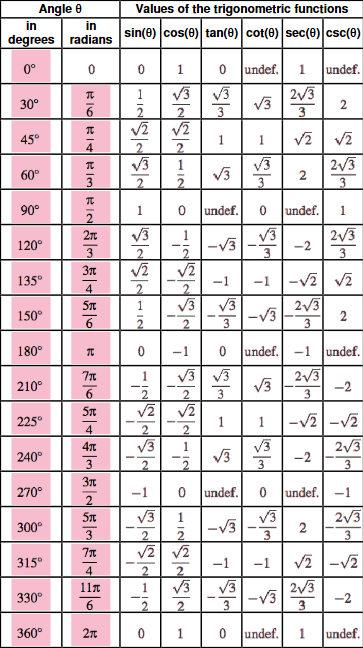
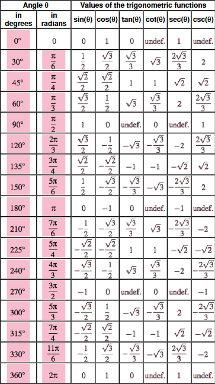
Logarithmic Identities
\[ \begin{array}{ll} \ln(1) &=& 0 \\ ~\\ \ln(e) &=& 1 \\ ~\\ \ln(x) &=& \log_{e}(x) \\ ~\\ \log(x) &=& \log_{10}(x) \\ ~\\ \log_{b}(1) &=& 0 \\ ~\\ \log_{b}(b) &=& 1 \\ ~\\ \log_{b}(x^{e}) &=& e\log_{b}(x) \\ ~\\ \log_{b}(xy) &=& \log_{b}(x) + \log_{b}(y) \\ ~\\ \log_{b}(x) &=& \dfrac{1}{\log_{x}(b)} \\ ~\\ x^{\log_{b}(y)} &=& y^{\log_{b}(x)} \\ ~\\ \log_{b}(0) &=& \text{undefined} \\ ~\\ \log_{b}(-x) &=& \text{undefined} \\ ~\\ \log_{b}(x) &=& \dfrac{\ln(x)}{\ln(b)} \end{array} \]
Common Rules
Product Rules
\[ \begin{array}{ll} a^{x} \cdot a^{y} = a^{x + y} & a^{x} \cdot b^{x} = (a \cdot b)^{x} \\ \end{array} \]
Quotient Rules
\[ \begin{array}{ll} \dfrac{a^{x}}{a^{y}} = a^{x - y} & \dfrac{a^{x}}{a^{x}} = \left ( \dfrac{a}{b} \right )^{x} \\ \end{array} \]
Exponent Rules
\[ \begin{array}{ll} \left ( b^{x} \right )^{y} = b^{x \cdot y} & b^{x^{y}} = b^{(3^{2})} & \\ ~\\ \sqrt[y]{b^{x}} = b^{\frac{x}{y}} & b^{\frac{1}{x}} = \sqrt[x]{b} \\ ~\\ b^{x} = e^{\ln(b^{x})} & b^{-x} = \dfrac{1}{b^{x}} \\ \end{array} \]
Logarithm Rules
\[ \begin{array}{ll} \ln(x) = \log_{e}(x) \\ ~\\ \log_{b}(x \cdot y) = \log_{b}(x) + \log_{b}(y) & \log_{b}(\frac{x}{y}) = \log_{b}(x) - \log_{b}(y) \\ ~\\ \log_{b}(x^{y}) = y \cdot \log_{b}(x) & \ln(x^{y}) = y\ln(x) \\ ~\\ \log_{b}(c) = \dfrac{1}{\log_{c}(b)} & \log_{b}(\sqrt[y]{x}) = \dfrac{\log_{b}(x)}{y} \\ ~\\ c\log_{b}(x) + d\log_{b}(y) = \log_{b}(x^{c}y^{d}) \\ ~\\ \log_{b}(1) = 0 & \log_{b}(b) = 1 \\ ~\\ \lim_{x \to 0^{+}} \log_{b}(x) = -\infty & \lim_{x \to \infty} \log_{b}(x) = \infty \\ ~\\ \log_{b}(x) \text{ is undefined when } x \le 0 \\ ~\\ \dfrac{d}{dx}\left [ \log_{b}(x) \right ] = \dfrac{1}{x\ln(b)}& {\displaystyle \int \log_{b}(x)\;dx} = x\log_{b}(x) - \dfrac{x}{\ln(b)} + C \\ \end{array} \]
Zero Rules
\[ \begin{array}{ll} b^{0} = 1 & 0^{x} = 0, \text{ for } n > 0 \\ \end{array} \]
Derivative Rule
\[ \frac{d}{dx}(x^{n}) = n \cdot x^{n - 1} \]
Integral Rule
\[ \int x^{n}\;dx = \frac{x^{n + 1}}{n + 1} + C \]
Limit Laws
\[ \underline{\textbf{Sum Law}} \\ ~\\ 1.\; \lim_{x \to a} [f(x) + g(x)] = \lim_{x \to a} f(x) + \lim_{x \to a} g(x) \\ ~\\ \underline{\textbf{Difference Law}} \\ ~\\ 2.\; \lim_{x \to a} [f(x) - g(x)] = \lim_{x \to a} f(x) - \lim_{x \to a} g(x) \\ ~\\ \underline{\textbf{Constant Multiple Law}} \\ ~\\ 3.\; \lim_{x \to a} [cf(x)] = c \lim_{x \to a} f(x) \\ ~\\ \underline{\textbf{Product Law}} \\ ~\\ 4.\; \lim_{x \to a} [f(x)g(x)] = \lim_{x \to a} f(x) \cdot \lim_{x \to a} g(x) \\ ~\\ \underline{\textbf{Quotient Law}} \\ ~\\ 5.\; \lim_{x \to a} \frac{f(x)}{g(x)} = \frac{\lim_{x \to a} f(x)}{\lim_{x \to a} g(x)} \text{ if } \lim_{x \to a} g(x) \neq 0 \\ ~\\ \underline{\textbf{Power Law}} \\ ~\\ 6.\; \lim_{x \to a} [f(x)]^{n} = [\lim_{x \to a} f(x)]^{n} \; \text{ where } n \text{ is a positive integer } \\ ~\\ 7.\; \lim_{x \to a} c = c \\ ~\\ 8.\; \lim_{x \to a} x = a \\ ~\\ 9.\; \lim_{x \to a} x^{n} = a^{n} \; \text{ where } n \text{ is a positive integer } \\ ~\\ 10.\; \lim_{x \to a} \sqrt[n]{x} = \sqrt[n]{a} \; \text{ where } n \text{ is a positive integer } ~\\ \underline{\textbf{Root Law}} \\ ~\\ 11.\; \lim_{x \to a} \sqrt[n]{f(x)} = \sqrt[n]{\lim_{x \to a} f(x)} \; \text{ where } n \text{ is a positive integer } \\ ~\\ [\text{ if } n \text{ is even, we assume that } \lim_{x \to a} f(x) > 0 \text{. }] \]
Limit Chain Rule
First take the limit of \(g(x)\), then substitute the limit of \(g(x)\) for \(u\) into the original limit and update the limit bounds with \(u\).
\[ \lim_{x \to a} f(g(x)) = L \]
\[ \begin{array}{ll} \lim_{x \to a} g(x) = b & \lim_{u \to b} f(u) = L \\ \end{array} \]
Derivatives
Polynomial
\[ \begin{array}{ll} \dfrac{d}{dx}(x) &=& 1 \\ ~\\ \dfrac{d}{dx}(x^{2}) &=& 2x \\ ~\\ \dfrac{d}{dx}(x^{n}) &=& nx^{n - 1} \\ ~\\ \dfrac{d}{dx}(x^{\frac{1}{n}}) &=& \dfrac{1}{nx^{\frac{1}{n} - 1}} \\ ~\\ \dfrac{d}{dx}(mx^{n}) &=& mnx^{n - 1} \\ \end{array} \]
Trigonometric Functions
\[ \begin{array}{ll} \dfrac{d}{dx}(\sin{x}) = \cos{x} & \dfrac{d}{dx}(\csc{x}) = -\csc{x}\cot{x} \\ ~\\ \dfrac{d}{dx}(\cos{x}) = -\sin{x} & \dfrac{d}{dx}(\sec{x}) = \sec{x}\tan{x} \\ ~\\ \dfrac{d}{dx}(\tan{x}) = \sec^{2}{x} & \dfrac{d}{dx}(\cot{x}) = -\csc^{2}{x} \\ \end{array} \]
Hyperbolic Functions
\[ \begin{array}{ll} \dfrac{d}{dx}(\sinh{x}) = \cosh{x} & \dfrac{d}{dx}(\operatorname{csch}{x}) = -\operatorname{csch}{x}\coth{x} \\ ~\\ \dfrac{d}{dx}(\cosh{x}) = \sinh{x} & \dfrac{d}{dx}(\operatorname{sech}{x}) = -\operatorname{sech}{x}\tanh{x} \\ ~\\ \dfrac{d}{dx}(\tanh{x}) = \operatorname{sech}^{2}{x} & \dfrac{d}{dx}(\coth{x}) = -\operatorname{csch}^{2}{x} \\ ~\\ \dfrac{d}{dx}(\sinh{ax}) = a\cosh{ax} & \dfrac{d}{dx}(\operatorname{csch}ax) = -a\operatorname{csch}{ax}\coth{ax} \\ ~\\ \dfrac{d}{dx}(\cosh{ax}) = a\sinh{ax} & \dfrac{d}{dx}(\operatorname{sech}ax) = -a\operatorname{sech}{ax}\tanh{ax} \\ ~\\ \dfrac{d}{dx}(\tanh{ax}) = a\operatorname{sech}^{2}ax & \dfrac{d}{dx}(\coth{ax}) = -a\operatorname{csch}^{2}{ax} \\ \end{array} \]
Inverse Trigonometric Functions
\[ \begin{array}{ll} \dfrac{d}{dx}(\sin^{-1}{x}) = \dfrac{1}{\sqrt{1 - x^{2}}} & \dfrac{d}{dx}(\csc^{-1}{x}) = -\dfrac{1}{x\sqrt{x^{2} - 1}} \\ ~\\ \dfrac{d}{dx}(\cos^{-1}{x}) = -\dfrac{1}{\sqrt{1 - x^{2}}} & \dfrac{d}{dx}(\sec^{-1}{x}) = \dfrac{1}{x\sqrt{x^{2} - 1}} \\ ~\\ \dfrac{d}{dx}(\tan^{-1}{x}) = \dfrac{1}{1 + x^{2}} & \dfrac{d}{dx}(\cot^{-1}{x}) = -\dfrac{1}{1 + x^{2}} \end{array} \]
Inverse Hyperbolic Functions
\[ \begin{array}{ll} \dfrac{d}{dx}(\sinh^{-1}{x}) = \dfrac{1}{\sqrt{1 + x^{2}}} & \dfrac{d}{dx}(\operatorname{csch}^{-1}{x}) = -\dfrac{1}{\left | x \right |\sqrt{x^{2} + 1}} \\ ~\\ \dfrac{d}{dx}(\cosh^{-1}{x}) = \dfrac{1}{\sqrt{x^{2} - 1}} & \dfrac{d}{dx}(\operatorname{sech}^{-1}{x}) = -\dfrac{1}{x\sqrt{1 - x^{2}}} \\ ~\\ \dfrac{d}{dx}(\tanh^{-1}{x}) = \dfrac{1}{1 - x^{2}} & \dfrac{d}{dx}(\coth^{-1}{x}) = \dfrac{1}{1 - x^{2}} \end{array} \]
Logarithmic
\[ \begin{array}{ll} \dfrac{d}{dx}(\ln(x)) &=& \dfrac{1}{x} \\ ~\\ \dfrac{d}{dx}(\ln(mx)) &=& \dfrac{1}{x} \\ ~\\ \dfrac{d}{dx}(\ln(x^{n})) &=& \dfrac{n}{x} \\ ~\\ \dfrac{d}{dx}(\ln(mx^{n})) &=& \dfrac{n}{x} \\ ~\\ \dfrac{d}{dx}(\log_{b}(x)) &=& \dfrac{1}{x\ln(b)} \\ ~\\ \dfrac{d}{dx}(\log_{b}(mx)) &=& \dfrac{1}{x\ln(b)} \\ ~\\ \dfrac{d}{dx}(\log_{b}(x^{n})) &=& \dfrac{n}{x\ln(b)} \\ ~\\ \dfrac{d}{dx}(\log_{b}(mx^{n})) &=& \dfrac{n}{x\ln(b)} \\ \end{array} \]
Exponential
\[ \begin{array}{ll} \dfrac{d}{dx}(a^{x}) &=& \dfrac{d}{dx}\left [ (e^{\ln(a)})^{x} \right ] &=& a^{x}\ln(a) \\ ~\\ \dfrac{d}{dx}(a^{nx}) &=& \dfrac{d}{dx}\left [ (e^{\ln(a)})^{nx} \right ] &=& na^{nx}\ln(a) \\ ~\\ \dfrac{d}{dx}(e^{x}) &=& e^{x} \\ ~\\ \dfrac{d}{dx}(e^{nx}) &=& ne^{nx} \\ \end{array} \]
Antiderivatives (Integral)
Table of Integrals
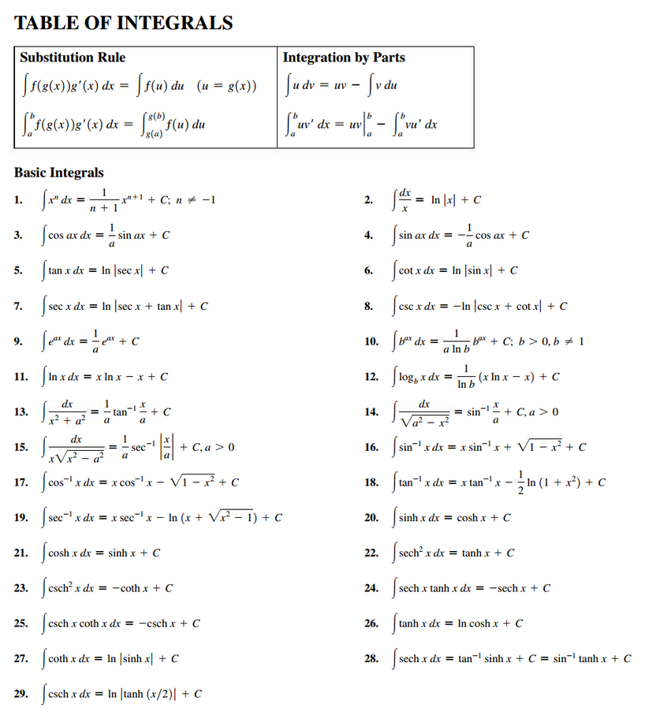 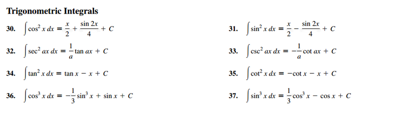 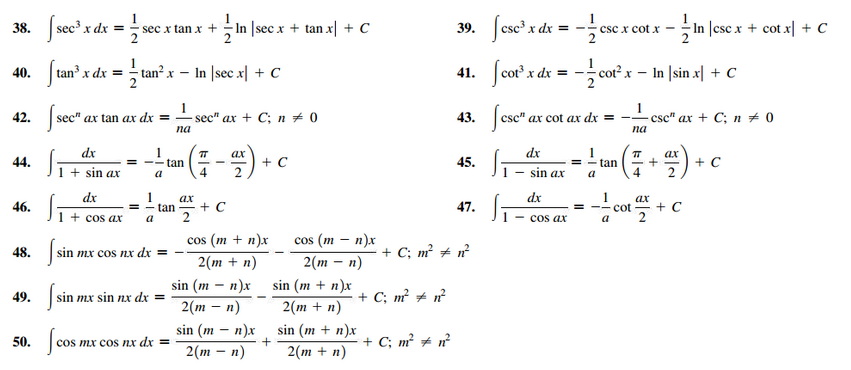 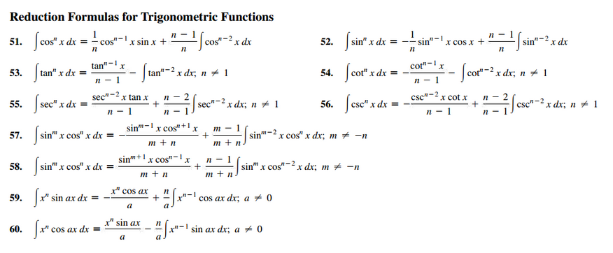 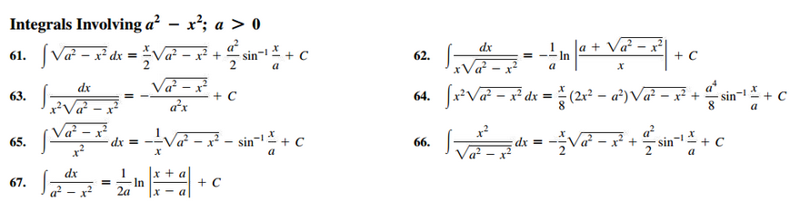 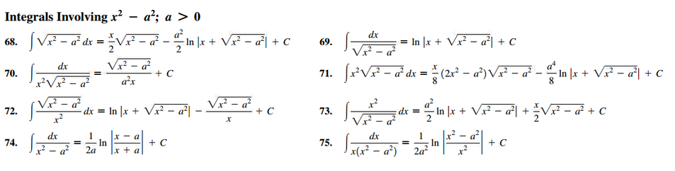 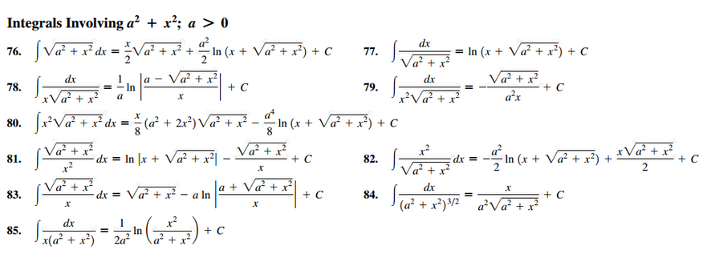 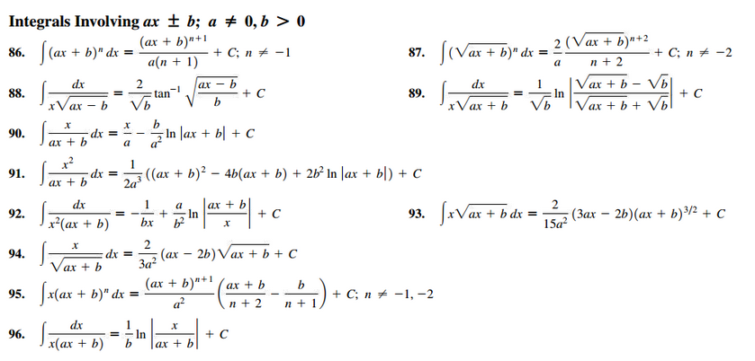 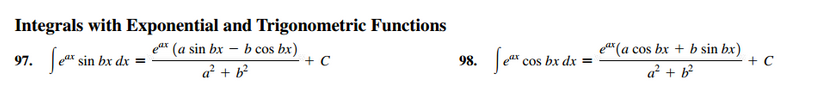 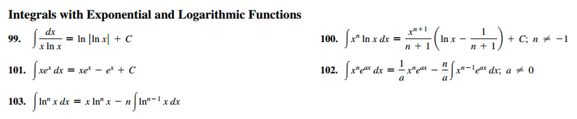 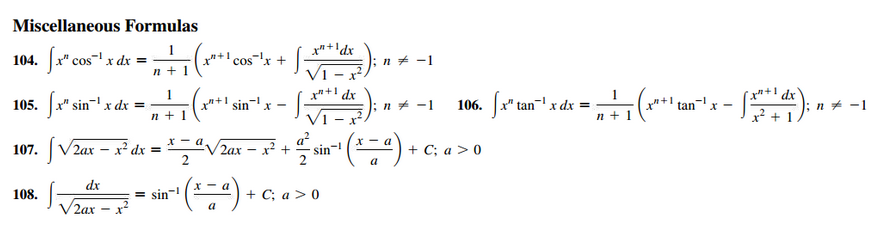
Common Integration Formulas

Common Indefinite Integrals
\[ \begin{array}{ll} \int cf(x)dx = c \int f(x)dx & \int [f(x) + g(x)]dx = \int f(x)dx + \int g(x)dx \\ ~\\ \int k\;dx = kx + C \\ ~\\ \int x^{n}dx = \dfrac{x^{n + 1}}{n + 1} + C(n \neq - 1) & \int \dfrac{1}{x}dx = \ln |x| + C\\ ~\\ \int e^{x}dx = e^{x} + C & \int b^{x}dx = \dfrac{b^{x}}{\ln(b)} + C \\ ~\\ \int \sin(x)\;dx = -\cos(x) + C & \int \cos(x)dx = \sin(x) + C \\ ~\\ \int \sin^{2}(x)\;dx = \frac{1}{2} \left ( x - \frac{1}{2}\sin(2x) \right ) + C & \int \cos^{2}(x)dx = \frac{1}{2} \left ( x + \frac{1}{2}\sin(2x) \right ) + C \\ ~\\ \int \sec^{2}(x)dx = \tan(x) + C & \int \csc^{2}(x)dx = -\cot(x) + C \\ ~\\ \int \sec(x)\tan(x)dx = \sec(x) + C & \int \csc(x)\cot(x)dx = - \csc(x) + C \\ ~\\ \int \dfrac{1}{x^{2} + 1}dx = \tan^{-1}(x) + C & \int \dfrac{1}{\sqrt{1 - x^{2}}}dx = \sin^{-1}(x) + C \\ ~\\ \int \sinh(x)dx = \cosh(x) + C & \int \cosh(x)dx = \sinh(x) + C \end{array} \]
Polynomial
\[ \begin{array}{ll} \int x\;dx &=& \dfrac{x^{2}}{2} + C \\ ~\\ \int x^{n}\;dx &=& \dfrac{x^{n + 1}}{n + 1} + C \\ ~\\ \int \sqrt[y]{x}\;dx &=& \dfrac{x^{\frac{1}{y} + 1}}{\frac{1}{y} + 1} + C \\ ~\\ \int x^{\frac{m}{n}}\;dx &=& \dfrac{x^{\frac{m}{n} + 1}}{\frac{m}{n} + 1} + C = \dfrac{nx\frac{m + n}{n}}{m + n} + C \\ ~\\ \int mx^{n}\;dx &=& m\dfrac{x^{n + 1}}{n + 1} + C \\ ~\\ \int \frac{1}{x}\;dx &=& \ln|x| + C \\ \end{array} \]
Trigonometric Functions
\[ \begin{array}{lll} {\displaystyle \int \sin(x)} = -\cos(x) + C & {\displaystyle \int \cos(x)} = \sin(x) + C \\ ~\\ {\displaystyle \int \sin(mx)} = -\dfrac{1}{m}\cos(mx) + C & {\displaystyle \int \cos(mx)} = \dfrac{1}{m}\sin(mx) + C \\ ~\\ {\displaystyle \int \csc(x)} = -\ln \left | \csc(x) + \cot(x) \right | + C & {\displaystyle \int sec(x)} = \ln \left | \tan(x) + \sec(x) \right | + C \\ ~\\ {\displaystyle \int \csc(x)} = \ln \left | \tan(\frac{x}{2}) \right | + C \\ ~\\ {\displaystyle \int \csc(mx)} = -\frac{1}{m}\ln \left | \csc(mx) + \cot(mx) \right | + C & {\displaystyle \int sec(mx)} = \frac{1}{m}\ln \left | \tan(mx) +\sec(mx) \right | + C \\ ~\\ {\displaystyle \int \csc(mx)} = \frac{1}{m}\ln \left | \tan(\frac{mx}{2}) \right | + C \\ ~\\ {\displaystyle \int \tan(x)} = -\ln \left | \cos(x) \right | + C & {\displaystyle \int cot(x)} = \ln \left | \sin(x) \right | + C \\ ~\\ {\displaystyle \int \tan(mx)} = -\frac{1}{m}\ln \left | \cos(mx) \right | + C & {\displaystyle \int cot(mx)} = \frac{1}{m}\ln \left | \sin(mx) \right | + C \\ \end{array} \]
Logarithmic
\[ \begin{array}{ll} \int \ln(x)\;dx &=& x\ln(x) - x + C \\ ~\\ \int \ln(x^{n})\;dx &=& nx\ln(nx) - nx + C \\ ~\\ \int \ln(mx)\;dx &=& x\ln(mx) - x + C \\ ~\\ \int \ln(mx^{n})\;dx &=& x\ln(m) + nx\ln(x) - nx + C \\ ~\\ \int \log_{b}(x)\;dx &=& {\displaystyle \int \frac{\ln(x)}{ln(b)}} = x\log_{b}(x) - \dfrac{x}{\ln(b)} + C \\ ~\\ \int \log_{b}(x^{n})\;dx &=& n\left ( x\log_{b}(x) - \dfrac{x}{\ln(b)} \right ) + C \\ ~\\ \int \log_{b}(mx)\;dx &=& x\log_{b}(mx) - \dfrac{x}{\ln(b)} + C \\ ~\\ \int \log_{b}(mx^{n})\;dx &=& x\log_{b}(m) + n\left ( x\log_{b}(x) - \dfrac{x}{\ln(b)} \right ) + C \\ \end{array} \]
Exponential
\[ \begin{array}{ll} \int a^{x}\;dx = \dfrac{a^{x}}{\ln(a)} + C \\ ~\\ \int a^{nx}\;dx = \dfrac{a^{nx}}{n\ln(a)} + C \\ ~\\ \int \dfrac{1}{a^{x}}\;dx = -\dfrac{a^{-x}}{\ln(a)} + C \\ ~\\ \int \dfrac{1}{a^{nx}}\;dx = -\dfrac{a^{-nx}}{n\ln(a)} + C \\ ~\\ \int e^{x}\;dx = e^{x} + C \\ ~\\ \int e^{mx}\;dx = \dfrac{1}{m}e^{mx} + C \\ \end{array} \]